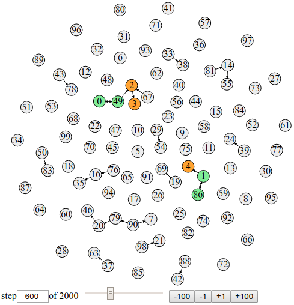
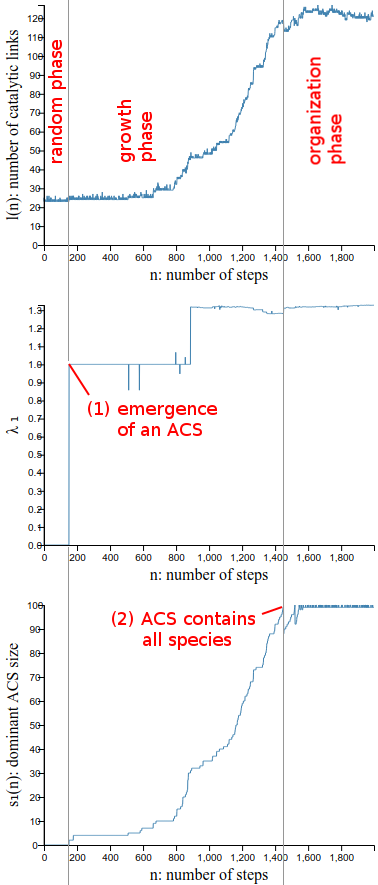

This is a model of autocatalytic sets and their evolution as described in [1]; reimplementation and visualization.
The model consists of
An autocatalytic set (ACS) is a set of species in which each species is catalytically produced by some other species in the set. For example, a minimal ACS is the 2-cycle A ⇄ B, where A catalyses B and B catalyses A. Thus, as a whole, the set of species (re)produces itself (is autocatalytic), even though individual species alone do not.
An ACS always contains a cycle of species linked via catalytic interactions. Depending on their location with respect to the cycle, species are classified as:
The model at a given time step is visualized as a graph: species as nodes, catalytic interactions as directed links. Numbers in nodes indicate particular species, designated 1..s. ACSs are shown by coloring core and shadow species with green and orange, respectively. A set of controls below the graph allows to scroll through all time steps. Other model properties are shown in separate charts.
 In the above example, the graph shows the model at time step 600. The are two ACSs: {0 (core), 49 (core), 2 (shadow), 3 (shadow)}, {1 (core), 86 (core), 4 (shadow)}.
In each time step, the catalytic interactions determine a number of descriptive properties of the species-interactions system, related primarily to ACSs:
After each time step, exactly one species is replaced by a new species; the old species' catalytic interactions with other species are removed and the new species' interactions are assigned at random, again.
The species replaced is the least fit species, one with the lowest molecular concentration.
Relative molecular concentrations of all species are fully determined by the structure of catalytic interactions, regardless of their previous concentrations (due to previous interactions). The concentrations are computed, but not shown, in each time step.
The model demonstrates the emergence and growth of autocatalytic sets, from an initial pool of random chemical species without any such set.
In the course of model evolution, an ACS
The above three phases, separated by the phase transition points (1), (2) are easily found in the charts: 
The appearance of a minimal ACS is by chance and is, given enough time steps, inevitable for any m > 0, because it has a finite non-zero probability.
The growth of ACSs to all species is inevitable because as long as a smaller-than-all-species ACS exists, the update rule replaces a non-ACS species, and the new species can join the ACS with again non-zero probability. The replaced species is a non-ACS species because in presence of an ACS, the relative concentrations of non-ACS species are orders of magnitude lower than those of ACS species, as the latter grow much faster (exponentially) in a positive catalytic feedback loop.
(see [1] for more details)
The forming and growth of ACS is an example of self-organizating complexity, not prescribed by but emergent from the lower-level model mechanics (the update rule). The complexity of an ACS grows exponentially, as measured by the number of catalytic interactions (links). This is even though the average number of links of a new species is the same as was that of the replaced species, initially.